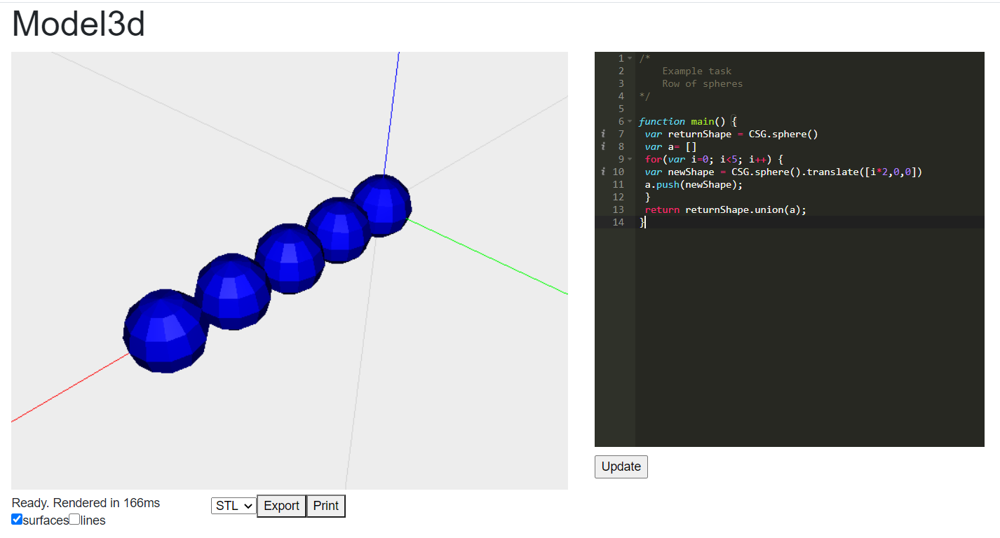
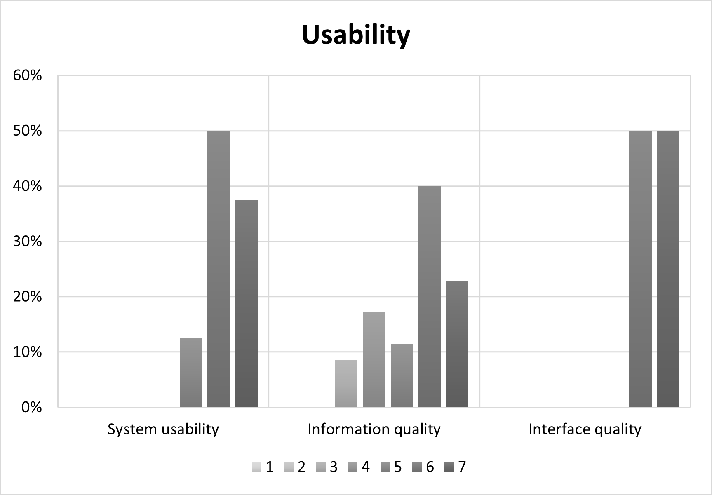
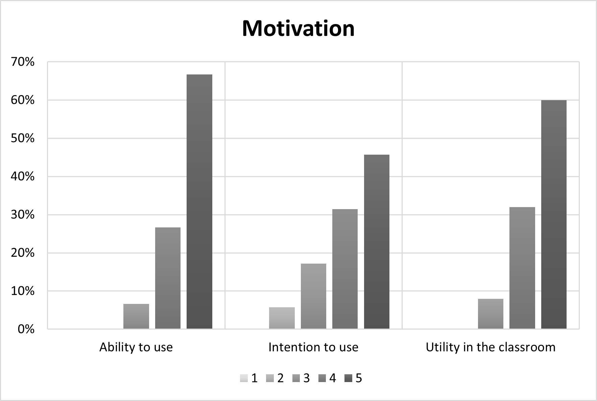

Introduction
The use of graphics libraries to engage and motivate students in
learning introductory programming has consistently shown to be
useful. In the early days of CS education, Logo Turtle, which was
used in over 250 classrooms, was found to have dramatic improvements in student engagement, confidence, problem-solving abilities, and motivation, among others. Since then, a variety of
newer tools have been found effective.
For example, the Processing Project was created with the aim to facilitate
an exploratory and design-oriented approach to teaching programming. The Processing programming language is based on Java and
provides a flexible set of code elements to create visual designs in
both two and three dimensions. Processing-based CS education programs report
great success in improving student interest and retention through
this approach, which they studied across two universities over six
years.
A similar approach has also been extended to physical models. Processing-based libraries for creating designs to be forged by a laser cutter, for example, have also been successful, finding that almost all participants in workshops using them are interested in programming again in the future.
The present project can be seen as a further conceptual expansion
of this approach, in that it provides a library
for modelling designs for digital fabrication, but for 3D digital
fabrication machines, i.e. 3D printers.
System Design
This project focuses on the design component of the 3D printing workflow.
The core Model3D application provides a typical IDE with a text editor and the ability to run
the implemented code. The viewer renders the code on-screen as a
3D visualisation of the model. This interface is shown below.

A user implements writes code that specifies a 3D artefact. The
client sends this javascript file to a web server which runs the
implemented code with the OpenJsCad backend. The server returns
a graphical representation of the artefact to be rendered in the
user interface.
When happy with their model, they can move to the Print3D printing
simulation, or export the model to a format commonly used in computer-aided design, STL (STereoLithography).
This format is accepted by most modern printers, and is also what is used for compilation by
the simulation.
Results
The results collected from our study were found to support our
hypotheses, which says that educators will find Model3D to be
user-friendly for novices, and useful for increasing student motivation in learning introductory programming. This was supported by
the quantitative surveys, which found significantly above average
positive attitudes both in terms of usability and utility towards motivation. The qualitative data also supports the hypotheses, where
participants express concerns about particular aspects, but on the
whole find the system user-friendly, interesting, and useful for
teaching.
The distribution of scores can be seen below, for usability:

And motivation:

Below are some quotes from the qualitative component (all names have been changed):
Luke
Teaching assistant
"It gives a very clear visualisation of the code, and with
the code and result on the same screen, it is easy to
see the result of small changes to the code and figure
out how things work.."
Rethabile
Teaching assistant
"While I have given a fair amount of feedback I do
feel like the project is a great success. I felt really
motivated to continue experimenting after trying the
tool. The suggestions I have given are aimed at making
it more easier to use in an educational setting where
users should spend as little time as possible figuring
out the tools they use (as that is not the focus of their
work)."
Documents
Literature Review (pdf)
Final paper (pdf)